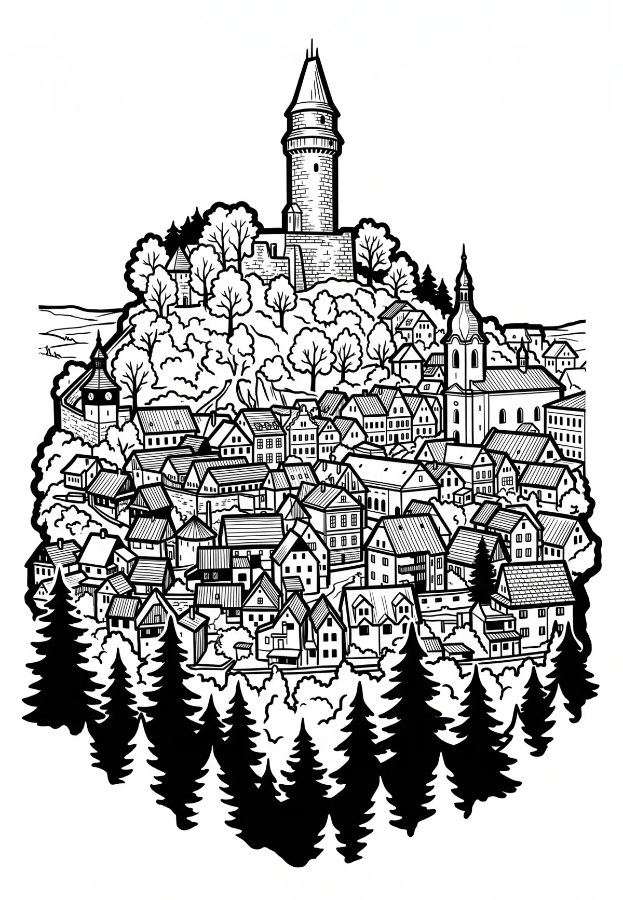

Štramberk
Štramberk (německy Strallenberg nebo Stramberg) je město v okrese Nový Jičín v Moravskoslezském kraji, poblíž Kopřivnice, ležící na svazích Zámeckého vrchu, Kotouče a Bílé hory v Libotínských vrších v podhůří Beskyd. Žije zde přibližně 3 500 obyvatel. Město je přezdíváno jako „Valašský betlém“.
Více na Wikipedii